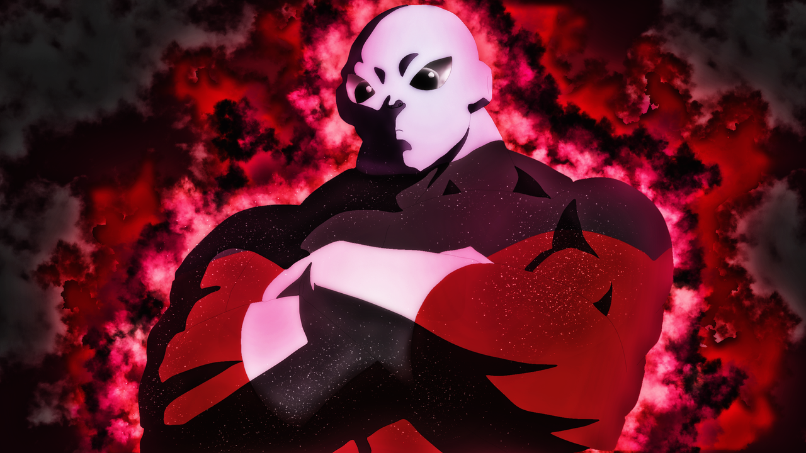
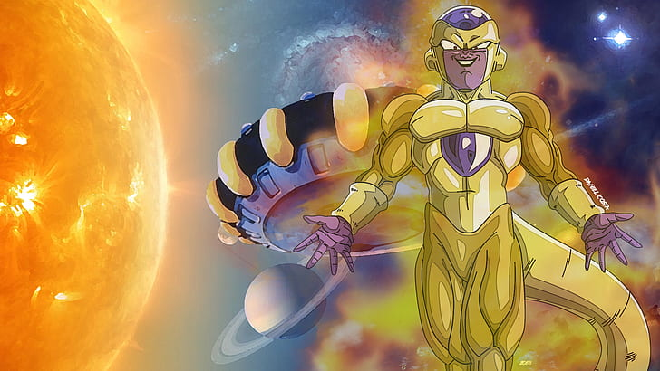

La Divinidad Corrupta del Súper Saiyajin Rosé
Esta imagen es un retrato poderoso y enigmático de Goku Black en su forma
Súper Saiyajin Rosé. El personaje, una versión corrupta del héroe de la Tierra,
se muestra con una pose icónica, apuntando con dos dedos a su sien con una
sonrisa de arrogancia fría. Su cabello rosa brillante y erizado es el punto
focal, simbolizando el poder divino que ha asimilado. Viste su característico
atuendo oscuro, acentuado por el anillo del tiempo en su dedo y el arete Pothala
en su oreja. El fondo es un vórtice vibrante de energía púrpura y rosa, con
destellos de luz que resaltan la intensidad de su aura. La imagen captura
la belleza letal y la maldad kalkulada de este formidable villano.

El Poder Absoluto del Universo 11
Esta imagen captura la imponente y estoica presencia de Jiren el
El guerrero más poderoso de las Tropas del Orgullo aparece con los brazos
cruzados, una postura que denota una confianza inquebrantable en su propia
fuerza. Su cuerpo musculoso, vestido con el uniforme rojo y negro
característico, está envuelto en un aura de energía carmesí y negra que
arde con intensidad. Los ojos oscuros y profundos de Jiren miran fijamente,
reflejando una determinación implacable y una fuerza de voluntad que desafía
los límites. El fondo oscuro y lleno de humo acentúa la sensación de misterio
y poder contenido que emana de este formidable adversario.

El Ascenso del Emperador Dorado
Esta ilustración dinámica presenta a Golden Frieza en toda su gloria dorada y
púrpura. El tirano galáctico, tras su intenso entrenamiento, ha alcanzado una
nueva forma que rivaliza con los dioses. Con los brazos extendidos y una sonrisa
maliciosa y de superioridad en su rostro, Frieza parece regodearse en su poder
recién adquirido. Su cuerpo brilla con un tono dorado intenso, mientras que los
acentos púrpuras en su cabeza, pecho y extremidades añaden un toque de elegancia
real y peligrosa. El fondo, con un sol abrasador y un paisaje cósmico con planetas
y estrellas, sugiere que la ambición de Frieza no tiene límites y que todo el
universo es su dominio.